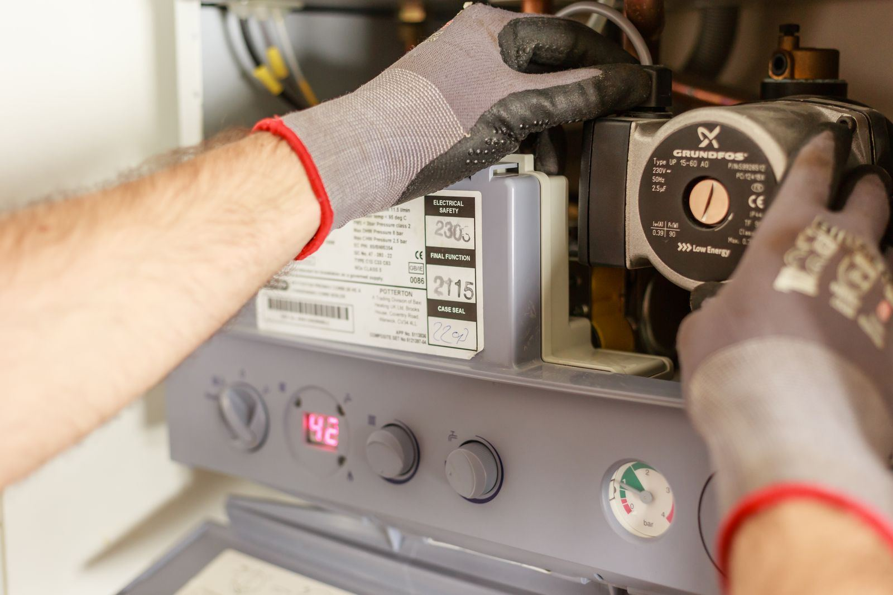

A tankless water heater does not store hot water at all. It waits for a faucet to open, senses the flow, fires a burner or energizes its elements, and heats water as it races through a compact heat exchanger. That on-demand design is a big part of its appeal, but it packs a lot of sensors and controls into one small cabinet, and every one of them has to agree before you get hot water. When one of them objects, the unit shuts down and posts an error code. In Blue Springs, MO, the usual culprits are mineral scale coating the heat exchanger, a flow sensor that no longer registers demand, an igniter or flame rod that cannot prove the flame, and venting or gas supply problems that trip the unit's safety limits.
Blue Springs Water Heater starts every tankless repair by reading the unit, not guessing at it. On every service call in Blue Springs, we pull the active error code and the stored fault history, then test the components that code points to: flow sensor output while a faucet runs, flame rod signal in microamps, igniter resistance, inlet gas pressure both static and at full fire, and vent condition from the unit to the termination. Scale gets checked by comparing inlet and outlet temperatures against flow rate, since a heat exchanger that cannot transfer heat gives itself away in those numbers. A code tells us where to look, not what to replace. An ignition code, for example, can come from a worn igniter, a dirty flame rod, low gas pressure, or a blocked intake, and each one calls for a different fix.
After the fault is pinned down, most repairs are finished in a single visit. We descale heat exchangers with a pump and descaling solution circulated through the service valves, replace worn flow sensors, igniters, flame rods, thermistors, and combustion fans, clean inlet filter screens, and correct venting problems that trip pressure switches. When the real issue is a gas line sized for the old tank heater, we tell you plainly and quote the correct pipe run, because no amount of part swapping will fix a unit that is starved for fuel. If you are fighting a cold-water sandwich, we explain whether it is normal behavior for your model or a sign of a setting, fixture, or recirculation problem we can correct. Call (816) 219-8423 and we will get your hot water flowing again.
What homeowners call us about most is Water Heater Repair in Blue Springs. Start there if you're not sure what you need.

Signs You Need Tankless Water Heater Repair in Blue Springs
Catching a symptom early is often the difference between a quick part swap and a tank that gives out on the garage floor. Watch for these telltale signs that professional help is needed:
- Unusual noises from the cabinet, like a whine, a roar, or a rattle
- A heater that only fires when water runs at full blast
- A fault code on the front panel and no hot water
- Temperature dropping sharply when a second shower or the dishwasher starts
- Repeated ignition attempts, then a shutdown
- Water dripping from the cabinet or the condensate line
- Water that swings between hot and lukewarm in the middle of a shower
- Cold slugs in the middle of hot water that last longer than before
Don't Wait for a Total Failure
A worn-out anode rod, a sediment-choked tank, or a weak thermocouple rarely fixes itself, and the repair usually costs more the longer it waits. If you notice any of these signs, contact Blue Springs Water Heater at (816) 219-8423 for a prompt inspection.
Get Tankless Water Heater Repair Handled Today
Call Blue Springs Water Heater for fast, reliable service.
Tap to Call (816) 219-8423Tankless Water Heater Repair FAQ
Why Professional Tankless Water Heater Repair Matters
There are two reasons tankless repair belongs with a professional: the diagnosis is tricky and the hazards are real. On the diagnostic side, an ignition code might mean a worn igniter, a dirty flame rod, low gas pressure, or a blocked intake, and replacing parts until the code clears adds up fast. On the safety side, a gas unit burns fuel at a very high rate and vents exhaust that contains carbon monoxide, while an electric unit can pull more than 100 amps through multiple 240-volt breakers. A mistake with either one is not a small mistake.
What you get from a professional is certainty. Instead of swapping parts, our technicians confirm the fault with a meter, a manometer, and temperature readings, so the fix is aimed at the actual cause. Descaling is done with a pump and service valves, not by pouring vinegar into an inlet and hoping. Gas pressure is checked with the burner at full output, vent runs are inspected against the manufacturer's length and clearance limits, and the unit is tested at low and high flow before we leave. Proper service also keeps you in line with the manufacturer's warranty terms, many of which expect qualified service and regular descaling.
Our Tankless Water Heater Repair Process
Every visit follows a step-by-step method built around testing first and replacing parts only when the readings call for it. Here's what you can expect when you choose Blue Springs Water Heater:
Code & Fault History Review
Every visit starts at the control board. We read the current code and past faults, then confirm the diagnosis with a meter and a manometer on the flow sensor, ignition parts, gas supply, and vent.
Plain Findings & Firm Quote
We show you the failed part, explain the cause, and give you a firm price before work begins. If scale has cracked the heat exchanger or the unit is near the end of its life, we say so plainly.
Same-Visit Fix
We carry the parts that fail most on tankless units, so flow sensors, igniters, flame rods, and thermistors are usually replaced on the spot, and descaling is done in roughly an hour.
Verified Temperature Rise
We run hot water at several flow rates, confirm the unit lights reliably and holds temperature, and check gas pressure at full fire before we leave.
Questions About Tankless Water Heater Repair?
Call Blue Springs Water Heater to talk through your situation with an experienced technician.
Tap to Call (816) 219-8423How to Prevent Water Heater Problems
A little routine care goes a long way toward keeping a water heater running well past its expected lifespan. Start with these practical measures our team relies on:
- Get the supply line checked before adding gas appliances, which can starve a tankless unit
- Consider a water softener or scale-reduction filter ahead of the heater if scale keeps returning
- Clear debris, snow, and dryer lint away from the vent and intake openings
- Leave the power on in cold weather, since freeze protection only runs when the unit has electricity
- Check the inlet filter screen periodically, since a clogged one starves the unit of flow
- Treat a code that returns after a reset as a symptom worth diagnosing, not ignoring
- Have the unit descaled at least once a year, or more often if your water is hard
Comparing DIY and Professional Work
The line between a safe DIY check and a risky repair is usually the moment you need to open a gas fitting, a vent connection, or an electrical cover. Consider the following comparison:
| Consideration | Doing It Yourself | Professional Service |
|---|---|---|
| Reading the Code | Trial and error based on the manual | Fault history and live readings pinpoint it |
| Scale Removal | No pump or isolation valves | Proper solution, pump, and flush time |
| Combustion Safety | No way to test pressure at full fire | Combustion, venting, and gas supply checked |
| Electrical Work | Exposed wiring and sensitive electronics | Wiring and connectors tested safely |
| Replacement Parts | Wrong sensor ordered on a guess | Model-matched parts, often on the truck |
| Result | Temporary fix at best | Lasting repair, confirmed by testing |
Get Tankless Water Heater Repair Help Today
Cold showers and damp floors don't get better on their own. Blue Springs Water Heater can have a technician headed your way soon.
Get Help: (816) 219-8423Tankless Water Heater Repair Across the Blue Springs Area
We serve Blue Springs and its neighboring towns for tankless water heater repair, from quick same-day repairs to planned installs.